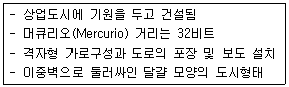
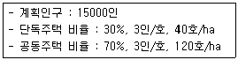
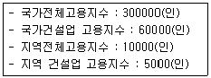
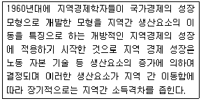
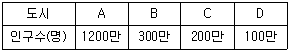
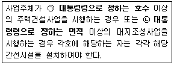

도시계획기사 (2017-05-07 기출문제)
1과목: 도시계획론
1. 어느 특정지역이 용도상으로 필요하다고 규정만 해두고 도면상의 배치결정은 유보하는 지역제 기법은?
- 부동지역제(float zoning)
- 특례조치(special exception)
- 혼합지역제(inclusive zoning)
- 성능지역규제(performance zoning)
(정답률: 86%)

2. 계획이론을 실제적 이론(Substantive Theories)과 절차적 이론(Procedural Theories)로 구분할 때 실제적 이론에 대한 설명으로 옳지 않은 것은?
- 다양한 계획 활동에 있어 필요로 하는 분야별 전문 지식에 관한 이론이다.
- 도시계획에서 실제적 이론이란 토지이용계획 교통계획 등에 관한 이론이 된다.
- 경제 또는 사회의 구조나 현상 등을 설명하고 예측하여 문제의 해결 대안을 제시하는 이론이다.
- 계획이 추구하는 목표와 가치에 따라 계획안을 만들어 내는 과정에 대한 공통적이고 일반적인 이론이다.
(정답률: 70%)
3. 친환경적인 도시개발과 사회적 비용을 최소화 하기 위해 토지이용 집적을 통해 토지의 이용가치를 높이기 위한 도시개발을 강조하는 도시는?
- 유시티(U-city)
- 에코시티(eco-city)
- 스마트시티(smart city)
- 컴팩트시티(compact city)
(정답률: 82%)
4. 우리나라 제2기 (판교, 화성, 김포, 송파 등) 신도시 계획의 특성은?
- 고밀도 유지
- 자가용교통 전제
- 프로젝트 파이낸싱 활동
- 하드웨어적 기반시설에 치중
(정답률: 70%)
5. 다음의 설명에 해당하는 도시는?

- 폼페이(Pompeii)
- 아오스타(Aosta)
- 카스트라(Castra)
- 팀가드(Timgard)
(정답률: 91%)
6. 근대국제건축회의(CIAM)의 아테네헌장(1933)에서 구분된 도시의 활동 기능에 해당하지 않는 것은?
- 생산
- 주거
- 개발
- 교통
(정답률: 82%)
7. 국토공간계획지원체계(Korea Planning Support System, KOPSS)에 대한 설명으로 옳지 않은 것은?
- 국토공간계획 및 정책의 수립, 시행, 평가과정에서 의사결정에 필요한 정보를 지원코자 개발된 계획지원도구이다.
- 국가공간정보체계의 자료와 한국토지정보(KLIS)등 유관시스템 자료를 온라인 또는 오프라인 형식으로 수집하여 연결, 가공, 처리하여 활용할 수 있다.
- 지역계획, 토지이용계획, 도시정비계획, 공공시설계획, 경관계획 등 공간계획 업무를 GIS와 공간통계기법의 활용을 통해 정책의사결정을 지원할 수 있다.
- “국가공간정보에 관한 법률” 제2조 제6항에 따라 기본공간정보데이터베이스를 기반으로 국가공간정보체계를 통합 또는 연계하여 국토교통부장관이 구축, 운용토록 되어 있다.
(정답률: 77%)
8. 메소포타미아지방에서 수메르(smer)인의 세운 고대도시국가가 아닌 것은?
- 우르(Ur)
- 우르크(Urk)
- 라가시(Lagash)
- 모헨조다로(Mohenjo-Daro)
(정답률: 70%)
9. 우리나라 도시계획제도의 성립과 변화 과정에 대한 설명으로 옳지 않은 것은?(오류 신고가 접수된 문제입니다. 반드시 정답과 해설을 확인하시기 바랍니다.)
- 근대 도시계획제도는 1934년 제정된 조선시가지계획령에서 비롯되었다.
- 1981 도시계획법이 전면 개정되면서 20년 장기의 도시기본계획수립을 제도화 하였다.
- 1962년 도시계획법이 제정되면서 일제의 잔재를 청산하고 새로운 도시계획체계를 확립했다.
- 2002년 국토의 계획 및 이용에 관한 법률을 제정하면서 각각 다른 법률에 의하여 도시지역과 비도시지역으로 관리하도록 운영을 이원화 하였다.
(정답률: 64%)
10. 경관계획에 대한 설명으로 옳은 것은?
- 경관계획의 요건은 크게 공공성과 현장성으로 요약할 수 있다.
- 경관계획은 크게 물적 경관계획과 장의 경관계획으로 구분된다.
- 경관계획은 형태를 중시하고 실천적이며 시간변동이 없는 공간적 계획이다.
- 경관계획의 대상을 직접 조작하거나 시점과 대상의 관계를 조작하여 특별한 경관현상으로 형성할 수 없다.
(정답률: 65%)
11. 도시개발사업의 시행방식에서 토지수용 또는 사용방식의 장점으로 옳지 않은 것은?
- 기반시설확보 용이
- 공공성 확보 및 일괄시행
- 토지소유자의 재정착가능
- 공시기간의 단축 및 대규모 개발 기능
(정답률: 75%)
12. 튀넨(Von Thunen)의 지대이론에 대한 설명으로 옳지 않은 것은?
- 지대는 토지의 위치에 따라 달라진다.
- 시장에서 멀어질수록 인구 밀도는 낮고 지대는 높다.
- 생산성이 같은 토지라도 시장으로부터의 거리에 따라 지대가 달라진다.
- 지대는 농산물이 생산되는 토지와 농산물이 판매되는 시장과의 거리에 의해 달라진다.
(정답률: 87%)
13. 다음 조건에서 주거지역 전체 면적은?

- 약 67ha
- 약 90ha
- 약 100ha
- 약 120ha
(정답률: 62%)
14. 중세도시의 특징에 대한 설명으로 옳지 않은 것은?
- 도로망은 불규칙적이며 폭이 좁았다.
- 기능적 성격으로 구분하면 성채도시, 정기신도시, 상업도시 등으로 구분할 수 있다.
- 상업도시의 경우 경제적 부흥으로 인구가 유입되면서 인구 10만을 넘어서는 도시가 발생하기 시작했다.
- 물리적 요소로 성벽, 시장, 사원 등이 있으며 특히 성벽과 대사원은 중세도시의 스카이 라인을 형성하는 중요한 요소였다.
(정답률: 63%)
15. 프리드만(Friedmann)에 의해 발전된 계획이론으로 공익이라고 정의되는 불확실한 계획의 목표를 추구하기 위한 과학적 접근방법을 비판하면서 인간적 요소를 강조하여 계획의 집행에 직접 영향을 받는 사람들과의 대화를 통해 계획을 수립하여야 한다는 계획이론은?
- 종합적 계획(Synoptic Planing)
- 옹호적 계획(Adbocacy Planning)
- 점진적 계획(Incremental Planning)
- 교류적 계획(Transactive Planning)
(정답률: 88%)
16. 실세계(real-world) 형상들을 표현한 지리 데이터베이스로서 불명확하고 특정한 범위가 없는 하나 이상의 공간형상을 다루며 연속적으로 변화하는 실세계 형상을 다루는 모델은?
- 목적기반모델(Goal-based model)
- 필드기반모델(Field-based model)
- 객체기반모델(Object-based model)
- 속성기반모델(Attribute-based model)
(정답률: 73%)
17. 도시조사에 이용되는 회귀분석도형에 대한 설명으로 옳지 않은 것은?
- 단순회귀분석이란 하나의 종속변수와 하나의 독립변수 사이의 관계를 추정하는 분석이다.
- 다중회귀분석이란 하나의 종속변수와 여러개의 독립변수 사이의 관계를 추정하는 분석이다.
- 회귀계수는 추정하려는 독립변수의 파라메타를 뜻하며 일반적으로 최소제곱법에 의하여 회귀계수를 추정한다.
- 추정된 회귀선이 표본자료를 얼마나 잘 설명하는가를 나타내는 통계량을 상관계수라고 하며 S2로 표시한다.
(정답률: 72%)
18. 토지이용계획의 역할과 목적에 대한 설명으로 옳지 않은 것은?
- 공공의 이익을 위해서 토지이용의 규제와 실행수단을 제시해 준다.
- 체계적인 계획과 도시의 발전을 도모하여 외연적 확산을 촉진시킨다.
- 자역적으로 보존해야 하는 지역에 대해서 토지이용에 대한 제한을 설정한다.
- 도시의 현재와 미래 모습을 고려하여 적절한 용도지역을 부여하여 개발 및 관리를 추진한다.
(정답률: 94%)
19. 우리나라 용도지역구제의 특징에 대한 설명으로 옳지 않은 것은?
- 용도지역은 상호 중복지정이 가능하고 용도지구는 중복지정이 허용되지 않는다.
- 토지이용의 특화 또는 순화를 도모하기 위하여 도시의 토지용도를 구분하는 제도이다.
- 이용목적에 부합하지 않는 건축 등의 행위는 규제하고 부합하는 행위는 유도하는 제도적 장치이다.
- 공공의 건강과 복리를 증진시키기 위한 것으로 이의 실현을 위해 법적 규제를 통하여 개인의 토지이용을 제한한다.
(정답률: 77%)
20. 창조도시와 관련하여 리차드 플로리다(Richard Florida)가 주장한 도시의 창조성을 측정하는 3가지 지표에 해당하지 않는 것은?
- 인재(Talent)
- 사고(Thought)
- 기술(Technology)
- 관용성(Tolerance)
(정답률: 50%)
2과목: 도시설계 및 단지계획
21. 도시공원 중 주로 도보권 안에 거주하는 자의 이용에 제공할 것을 목적으로 하는 도보권 근린공원의 유치거리 기준으로 옳은 것은?
- 250m 이하
- 500m 이하
- 1000m 이하
- 1500m 이하
(정답률: 63%)
22. 도로의 종류에서 도로의 사용 및 형태별 구분에 해당하지 않는 것은?
- 간선도로
- 고가도로
- 일반도로
- 지하도로
(정답률: 74%)
23. 다음 중 1980년경 새롭게 등장한 뉴 어바니즘(New Urbanism)에서 지정한 행동강령 기본 원칙에 해당하지 않는 것은?
- 다양한 주택(Mixed-Housing)
- 보행성(Walkability)
- 위요(Enclouse)
- 연결성(Connectivity)
(정답률: 79%)
24. 지구단위계획 수립 시 인센티브를 부여할 수 있는 사항이 아닌 것은?
- 공동개발의 지정/권장 준수
- 대지 내 공지 및 통로의 설치
- 지정된 차량 진, 출입구의 준수
- 자연지반의 보존
(정답률: 74%)
25. 단지계획에 있어 소음 및 진동과 관련된 설명으로 적합하지 않은 것은?(오류 신고가 접수된 문제입니다. 반드시 정답과 해설을 확인하시기 바랍니다.)
- 소음은 거리의 제곱에 반비례하여 그 세기가 감소한다.
- 소리에 의해 고통을 느끼기 시작하는 세기는 140dB이다.
- 일반적인 단지환경에 있어 소음의 세기는 50dB ~ 60dB 이하로 유지되어야 한다.
- 소리가 들리기 시작한 정도의 세기는 1dB이다.
(정답률: 30%)
26. 다음 중 게토(Ghetto)에 대한 설명으로 옳은 것은?
- 노후지역
- 불량주택지역
- 무허가주거지역
- 특정집단거주지역
(정답률: 72%)
27. 주거단지계획의 목표설정 시 고려해야 할 사항으로 틀린 것은?
- 기능의 충족성
- 이웃과의 유대
- 변화에의 불변성
- 환경선택의 자유
(정답률: 80%)
28. 순인구밀도가 250인/ha이고 주택용지율이 70%일 때 총인구밀도는?
- 1⑤ 인/ha
- 175 인/ha
- 265 인/ha
- 3⑤ 인/ha
(정답률: 83%)
29. 건폐율 60% 용적율 540%를 적용할 경우 최대층수는? (단, 각 층의 평면이 동일한 경우이다.)
- 3층
- 5층
- 9층
- 14층
(정답률: 91%)
30. 지구단위계획 수립 시 상업용지의 획지 및 가구계획 기준으로 틀린 것은?
- 도로에서의 접근이 용이하도록 계획한다.
- 구역중심지의 주간선도로 또는 보조간선 도로의 교차로 주변에 계획한다.
- 가구 규모는 시설입지에 대한 다양한 요구를 충족시킬 수 있도록 다양한 규모로 계획한다.
- 주간선도로 또는 보조간선도로를 따라 배치되는 가구는 2열 이상으로 배열이 되도록 한다.
(정답률: 86%)
31. 페리(C.A.Perry)가 주장한 근린주구론의 원칙이 아닌 것은?
- 주거단위는 하나의 초등학교 운영에 필요한 인구에 대응하는 규모를 가져야 하고 그 규모는 인구밀도에 의해 결정된다.
- 주거단위는 주거지 안으로 지나는 통과 교통이 내부를 관통하지 않고 우회되어야 하며 네면 모두 충분한 폭원의 간선도로(arterial street or high way)에 의해 둘러싸여져야 한다.
- 하나의 근린주구는 상위도시를 기준으로 구축된 가로체계에 의존하고 원할한 순환체계 속에서 통과교통을 체계적으로 수용할 수 있는 입체적인 가로망으로 계획한다.
- 개개근린주구의 요구에 부합하도록 계획된 소공원과 레크레이션 체계를 갖춘다.
(정답률: 77%)
32. 다음 중 우리나라에 도시설계 제도가 도입된 것에 관한 설명으로 틀린 것은?
- 도시설계 제도와 관련된 법규 중 지구지정 규정의 신설은 1991년에 이루어졌다.
- 도시설계 제도가 도입된지 5년 후인 1985년에 상세계획제도가 도입되었다.
- 도시설계를 처음 도입할 당시 주된 관심사는 간선 가로변의 미관 개선에 있었다.
- 제도로서의 도시설계를 처음 도입한 것은 1980년 건축법에 도시설계 조항을 법제화한 것이다.
(정답률: 68%)
33. 지구단위계획 중 특별계획구역의 지정 대상이 아닌 것은?
- 순차개발하는 경우 후순위개발 대상지역
- 공공사업 시행 이외의 모든 사업에 대하여 지구단위계획구역의 지정목적을 달성하기 위하여 필요한 경우
- 지구단위계획구역 안의 일정지역에 대하여 우수한 설계안을 반영하기 위하여 현상설계등을 하고자 하는 경우
- 하나의 대지안에 여러 동의 건축물과 다양한 용도를 수용하기 위하여 특별한 건축적 프로그램을 만들어 복합적 개발을 하는 것이 필요한 경우
(정답률: 56%)
34. 다음 중 생활권을 제1차~제3차 생활권으로 구분하였을 때, 제2차 생활권(중생활권)을 기준으로 설치되는 시설로 가장 적합한 것은?
- 대학교
- 우체국
- 초등학교
- 청소년회관
(정답률: 57%)
35. 학교의 결정기준과 관련한 규정상 새로이 개발되는 지역의 경우 몇 세대를 기준으로 근린주거구역으로 하는가? (단, 도시 군계획시설의 결정 구조 및 설치 기준에 관한 규칙에 따른다.)
- 2천세대 내지 3천세대
- 3천세대 내지 4천세대
- 4천세대 내지 5천세대
- 5천세대 내지 6천세대
(정답률: 81%)
36. 오픈스페이스의 기능에 대한 설명으로 옳지 않은 것은?
- 시냇물 연못 동산 등과 같은 자연 경관적 요소들을 제공한다.
- 기존의 자연환경을 보전, 향상시켜 줄 수 있는 수단을 제공한다.
- 공기정화를 위한 순환통로의 기능을 수행함으로써 미기후의 형성에 영향을 준다.
- 오픈스페이스의 적극적 확보를 위하여 평탄한 곳과 접근성이 뛰어난 곳을 우선 확보하여야 한다.
(정답률: 66%)
37. 도시설계제도와 관련하여 적합하지 않은 것은?
- 계획단위개발(PUD)은 규모는 작으나 특별한 조건을 가진 지구의 계획에 적용된다.
- 유동지역제(floating zoning)는 조건에 맞는 개발이 발생할 경우 적용하는 제도이다.
- 개발권이양(TDR)제도는 일반적으로 역사적 건축물이나 농경지 같은 오픈스페이스를 보존할 때 사용하는 제도이다.
- 용도지역 중, 지역을 합리적으로 변경(re-zoning & Up/down zoning)하는 것도 도시설계의 실천수단이다.
(정답률: 56%)
38. 지구단위계획구역을 변경하는 경우에 간계행정 기관의 장과의 협의, 국토교통부장관과의 협의 및 도시계획위원회의 심의를 생략할 수 있는 경우에 해당하지 않는 것은?
- 가구면적의 20% 이내의 변경인 경우
- 획지면적의 30% 이내의 변경인 경우
- 건축물높이의 20% 이내의 변경인 경우
- 건축선의 1미터 이내의 변경인 경우
(정답률: 47%)
39. 지구단위계획의 동선계획에 관한 설명으로 옳지 않은 것은?
- 간선가로변에서의 주차 출입은 가급적 제한한다.
- 공용주차장은 소요부지 최소화를 위해 가급적 기계식으로 설치한다.
- 차량동선으로 인한 보행공간 단절 및 침해를 최소화 한다.
- 공동개발하는 이면필지의 출입을 위하여 제한적 주차출입금지구간으로 지정한 후 공동개발시에 주차출입을 허용할 수 있다.
(정답률: 79%)
40. 경관창조를 위한 공동주택 주거동의 바람직한 배치에 대한 설명으로 틀린 것은?
- 스카이라인에 율동감을 준다.
- 기존 지형에 과다한 절 성토를 피한다.
- 주거동의 고층화를 억제하며 중 고밀도로 자연에 순응하는 군집형태로 건물을 배치한다.
- 연립 및 중 고층아파트의 배치는 주보행로를 중심으로 접지성이 약한 순서인 고층 중층 저층의 건축물을 차례로 배치한다.
(정답률: 78%)
3과목: 도시개발론
41. 종합계획적 성격의 도시개발기법은 무엇인가?
- TDR
- TOD
- PUD
- 연계개발수법
(정답률: 43%)
42. 다음 중 CM(Construction Management)에 대한 설명으로 옳지 않은 것은?
- 건설사업을 효율적으로 관리하기 위한 일련의 견적, 계약관리, 공정관리, 원가관리, 품질관리 관련 기술을 말한다.
- 우리나라는 1997년 건설산업기본법의 시행으로 공식적으로 제도권내로 수용되었다.
- 건설공사 계약형태로서 CM은 설계완료 후 시공자가 공사에 참여하는 설계, 시공일탈 턴키방식과 동일한 계약방식이다.
- 순수형 CM은 CM 전문업체가 사업자의 대리인으로서, 기획, 설계, 시공단계의 총괄적 관리업무만 수행한다.
(정답률: 61%)
43. 도시개발사업을 위한 재원 조달방안인지 지분조달방식에 대한 설명으로 옳지 않은 것은?
- 원리금인 이자의 상환부담이 없다.
- 중소기업의 경우 주식 공개매매 유통시장이 발달되지 않는다.
- 자본시장의 여건에 다라 조달이 민감하게 영향을 받는다.
- 조달규모의 증대로 소유자의 지분이 크게 확대된다.
(정답률: 56%)
44. 다음 중 리모델링 사업의 효과가 아닌 것은?
- 환경보전
- 신고용 창출
- 자원의 소모적 사용
- 건축시장의 다양성 확대
(정답률: 66%)
45. 워터프론트(waterfront)의 특성과 거리가 먼 것은?
- 조망성이 우수하다.
- 대중교통이 발달되어 있다.
- 자연과 접하기 쉬운 공간이다.
- 문화, 역사가 많이 축적된 공간이다.
(정답률: 69%)
46. 다음 중 도시 및 주거환경정비법에 따른 “정비사업”에 해당하지 않는 것은?(오류 신고가 접수된 문제입니다. 반드시 정답과 해설을 확인하시기 바랍니다.)(관련 규정 개정전 문제로 여기서는 기존 정답인 3번을 누르면 정답 처리됩니다. 자세한 내용은 해설을 참고하세요.)
- 주거환경개선사업
- 주택재건축사업
- 재정비촉진사업
- 도시환경정비사업
(정답률: 70%)
47. 다음 “재개발대상의 공간적 범위”에 따른 재개발의 유형에 대한 내용으로 틀린 것은?
- 주거지 재개발
- 개별 필지단위의 건축물 재개발
- 가구단위 재개발
- 지구단위 재개발
(정답률: 49%)
48. 자연발생적으로 성장한 도시에서 낙후되고 노후화된 기존의 도시시설지역의 시설을 보수 확장 새로운 시설을 첨가하는 방법을 통해 도시환경개선을 달성 하려는 개발방식은?
- 철거재개발
- 수복재개발
- 개량재개발
- 보전재개발
(정답률: 60%)
49. 도시 개발프로젝트를 실현하기 위하여 사업주체들이 주주로 출자하는 운영 및 경영법인은?
- Special Corporation
- Special Purpose Company
- Project Financing Corporation
- Project Management Company
(정답률: 68%)
50. 다음 중 계획단위개발(PUD)에 대한 설명으로 옳지 않은 것은?
- 일단의 지구를 하나의 계획단위로 보고 개발자의 입장에서 요구되는 사업성과 공적 입장에서 요구되는 환경의 질을 동시에 추구하는 제도라 할 수 있다.
- 계획단위개발을 하는 경우 그 구역 내에서 종래의 용도지역체가 완전히 실효 되는 것은 아니다.
- 계획단위개발지구 전체의 총밀도가 종전용도지역제에 의한 허용범위를 넘지 않는 한 지구내 각 획지는 밀도기준에 구애받지 않을 수 있다.
- 1962년 샌프란시스코에서 주거지역과 상업지역에 대한 특례조치로 시작되었다.
(정답률: 62%)
51. 토지자원의 특성이라 할 수 있는 것은?
- 단일성
- 고정성
- 소멸성
- 위치적 중복성
(정답률: 72%)
52. 대도시의 무분별한 외연적 확장을 억제하고 쇠퇴하고 있는 기성시가지의 물리적 환경 뿐 아니라 사회경제적 환경을 지속적으로 개선하기 위한 도시계획 경향을 무엇이라 하는가?
- 도시재개발(Urban Redevelpment)
- 도시재생(Urban Regeneration)
- 도시갱신(Urban renewal)
- 도시개발(Urban Develpoemt)
(정답률: 83%)
53. 역사보존도시의 필요성 및 의의와 가장 거리가 먼 것은?
- 도시의 품격보다는 수적인 인구 유발을 통하여 도시의 활력을 부여하는 역할을 한다.
- 개성적이고 다양한 경관을 나타내어 고층화 대형화 획일화 되어 가는 도시환경의 문제점을 해소하여 도시에 다양성을 부여한다.
- 역사 환경이 형성된 배경과 사상을 이해하고 과거와 현재를 연결시켜 도시의 역사성을 인식하는 도시 속 경험을 통해 도시생활을 풍부하게 한다.
- 도시의 발전과 맥락을 이해할 수 있는 전통적 기반보존을 통해 다른 도시와의 차별성을 부각시킬 수 있다.
(정답률: 88%)
54. 부동산 마케팅과 관계가 가장 적은 것은?
- 사후관리
- 상품기획
- 입지분석
- 시장조사
(정답률: 36%)
55. 개발주체에 따른 개발사업의 분류 중 공공개발 사업의 분류로 가장 적절한 것은?
- 리조트 재건축 등
- 관광단지 휴양단지 산업단지
- 주택 상가 업무시설 오피스텔 호텔
- SOC 사업, 택지개발사업, 간척사업, 시가지조성사업
(정답률: 89%)
56. 일반적으로 마케팅이 5단계에 걸쳐 이루어지려 할 때 , 다음 중 실행단계의 마케팅에 속하지 않는 것은?
- 광고 및 판매 촉진(Promotion)
- 판매 및 유통경로 관리(Sales)
- 상품기획(Merchandising)
- 사후관리(After service)
(정답률: 59%)
57. 도시개발구역 내 토지소유자가 “수용 또는 사용의 방식”으로 시행하는 도시 개발구역의 지정을 제안하고자 하는 경우 지켜야 할 조건은 다음 중 어느 것인가?
- 대상구역의 토지면적 2/3 이상에 해당하는 토지소유자의 동의를 얻어야 한다.
- 대상구역의 토지면적 1/2 이상에 해당하는 토지를 소유하고 토지소유자의 총수의 2/3이상에 해당하는 자의 동의를 얻어야 한다.
- 대상구역의 토지면적 2/3 이상에 해당하는 토지를 소유하고 토지소유자의 총수의 1/2 이상에 해당하는 자의 동의를 얻어야 한다.
- 대상구역의 토지면적 2/3 이상에 해당하는 토지를 사용할 수 있는 권원을 가지고 토지면적의 1/2를 소유하며, 토지소유자 총수의 2/3 이상에 해당하는 자의 동의를 얻어야 한다.
(정답률: 65%)
58. 어느 지역의 고용자수가 다음과 같다. 이 지역 건설사업의 입지상 계수(LQ)는 얼마인가?

- 0.02
- 0.08
- 0.40
- 2.50
(정답률: 74%)
59. 다음 중 시장(market) 및 시장분석(market analysis)의 개념과 필요성에 대한 설명으로 옳지 않은 것은?
- 통상적으로 시장이란 상품의 수요와 공급이 만나 양과 가격이 결정되어 거래가 일어나는 곳을 말한다.
- 도시개발사업 측면에서의 시장분석이란 시장의 수요와 공급에 영향을 미치는 요인을 분석하는 것을 말한다.
- 시장에서는 현재 거래가 일어나는 실질시장(actual market)과 거래가 일어날 가능성이 있는 잠재시장(potential market)이 잇는데 실질시장의 파악이 특히 중요하다.
- 도시개발사업은 공공성이 강한 정책적 사업으로 상당수가 정부의 개입과 통제를 축으로 시장의 수급이 이루어진다는 점에 유의하여 시장분석이 일워져야 한다.
(정답률: 74%)
60. 민관합동의 부동산개발금융방식인 프로젝트 파이낸셜(PF)에 대한 설명으로 틀린 것은?
- 협의의 의미로 프로젝트 자체의 사업성과 그로부터의 현금흐름을 바탕으로 자금을 조달하는 것을 말한다.
- PF의 특징 중 하나인 비소구금융(Non-recourse Financing)이란 투자자의 부담을 투자액 범위 내로 한정하는 방식을 말한다.
- PF의 특징 중 하나인 부외금융(off-balance-sheet financing)이란 프로젝트회사의 부채가 손익계산서상에 나타남으로서 프로젝트회사의 자본감소가 사업성에 영향이 없도록 하는 것을 의미한다.
- 광의의 의미로 특정 사업의 소요자금을 조달하기 위한 일체의 금융방식을 의미하며 개발사업과 관련한 모든 금융방식을 프로젝트 파이낸싱이라고 할 수 있다.
(정답률: 70%)
4과목: 국토 및 지역계획
61. 성장거점이론의 핵심사항인 선도 또는 추진산업(Leading or Propulsive Industry)의 특징으로 틀린 것은?
- 빠른 성장속도를 가진 산업
- 다른 산업 부문과 강한 연게를 갖는 산업
- 지역의 자원 부족과는 관계없는 대규모 산업
- 어던 지역의 성장을 불러올 진보된 수준의 기술을 요구하는 새롭고 동적인 산업
(정답률: 81%)
62. 변이할당분석(Shift-share Analysis)에 관한 설명으로 옳지 않은 것은?
- 지역의 횡적인 산업구조와 종적인 구조 변화를 동시에 살펴볼 수 있다.
- 산업구조에 관련된 정책적 대안을 제시할 때 이해가 용이하기 때문에 유용하게 쓰일 수 있다.
- 자료가 불충분하여 시계열적 분석이 불가능할 경우에도 두 시점에서의 자료만 확보되면 동태적인 분석이 가능하다.
- 기준연도와 최종연도 사이에서 일어나는 변화를 반영할 수 있어 예측모형으로 사용할 경우 예측력이 높다.
(정답률: 49%)
63. 평행주차형식 외의 경우 일반자동차의 주차 단위구획으로 옳은 것은?(관련 규정 개정전 문제로 여기서는 기존 정답인 3번을 누르면 정답 처리됩니다. 자세한 내용은 해설을 참고하세요.)
- 너비 2.0m 이상, 길이 3.5m 이상
- 너비 2.0m 이상, 길이 6.0m 이상
- 너비 2.3m 이상, 길이 5.0m 이상
- 너비 3.3m 이상, 길이 5.0m 이상
(정답률: 80%)
64. 다음 중 시장지향적인 산업들의 특징에 해당하는 것은?
- 수요의 변동이 심하여 많은 재고량을 확보해 두어야 한다.
- 전반적인 수송비가 다른 비용보다 지역에 따라 폭넓게 변화한다.
- 제품의 제조과정에서 원료의 중량이 크게 감소하는 경향이 있다.
- 단위 당 원료의 수송비용이 단위 당 최종 생산물의 수송비용보다 크거나 같다.
(정답률: 64%)
65. 크리스탈러(Christaller)의 행정의 원칙에 의한 중심지 구성의 경우 각각의 상위 중심지는 주변의 몇 개의 하위 중심지를 지배하는가?
- 3
- 4
- 6
- 7
(정답률: 61%)
66. 인간이 필요로 하는 최소한의 제화와 서비스 품목을 최저 소득집단에게 공급해 주고자 하는 지역개발전략은?
- 기본수요전략
- 농촌개발전략
- 성장거점전략
- 오지개발전략
(정답률: 83%)
67. 다음 중 제 4차 국토종합계호기이 제4차 국토종합계획 수정계획(2006-2020)으로 변경된 배경으로 가장 거리가 먼 것은?
- 지역 간, 계층 간 통합과 상생발전을 위한 방안 제시의 필요성
- 주요 대도시의 주택 부족문제를 해결하기 위한 주택의 대량 건설과 보급의 필요성
- 행정중심 복합도시 등 국가 중추 기능의 지방분산에 따른 국토공간구조의 변화를 반영할 필요성
- 남 북한 교류협력을 더욱 심화시키고 장기적인 국토통일을 염두해 둘 한반도 차원의 국토구상 마련 필요성
(정답률: 62%)
68. 국토기본법령상 국토조사에 관한 설명으로 틀린 것은?
- 국토교통부장관이 필요하다고 인정하는 경우 특정지역 또는 부문 등을 대상으로 수시조사를 실시할 수 있다.
- 국토교통부장관은 국토에 관한 계획 및 정책의 수립과 집행에 활용하기 위하여 국토종합계획의 수립시에 정기조사를 실시한다.
- 국토교통부장관은 중앙행정기관의 장 또는 지방자치단체의 장에게 조사해 필요한 자료의 제출을 요청하거나 조사사항 중 일부를 직접 조사하도록 요청할 수 있다.
- 국토교통부장관은 효율적 국토조사를 위해 조사항목 및 조사주제 등 필요한 사항에 대하여 관계 중앙행정기관의 장 및 시도지사와 사전협의를 거쳐 국토조사계획을 수립할 수 있다.
(정답률: 54%)
69. 다음이 주장하는 이론은?

- 종속이론
- 신고전이론
- 쇄신확산이론
- 중심-주변부 이론
(정답률: 65%)
70. 다음 중 결절지역의 분석에 적용하는 자료로 옳지 않은 것은?
- 전신 전화
- 도매 시장권
- 산업별 구성비
- 인구 이동과 통근
(정답률: 46%)
71. 다음 중 수도권에 과도하게 집중된 인구와 산업의 분산 및 적정배치를 유도하기 위하여 수립하는 계획은?
- 도종합계획
- 국토종합계획
- 지역개발계획
- 수도권 발전계획
(정답률: 72%)
72. 허쉬만(Hirschman)의 불균형 지역성장 이론에 대한 설명으로 옳은 것은?
- 대약진(big-push)전략
- 쇄신의 계층적 파급(hierarchical diffusion)
- 극화(polarization)와 적하효과(trickling down)
- 역류효과(backwash effect)와 파급효과(spread effect)
(정답률: 68%)
73. 수도권정비계획법상 수도권의 과밀을 해소하기 위한 목적으로 시행하는 규제수단으로 옳지 않은 것은?
- 총량규제
- 과밀부담금 부과
- 개발제한구역 지정
- 대규모 개발사업 규제
(정답률: 45%)
74. 지역정책수단으로써 성장거점(growth center)에 대한 설명으로 옳지 않은 것은?
- 집적경제의 이점을 살려나갈 수 있다.
- 분극효과를 통해 유효노동력을 흡입하는 지점이다.
- 지역 경제성장의 촉진을 위해 필요한 추진력 있는 산업이나 기업을 가지고 있다.
- 쇄신이나 과학기술의 혁신에 필요한 요인을 쉽게 창출하는 낙후지역을 선정하여 그 확산 효과를 누리는 지점이다.
(정답률: 60%)
75. 아래 표와 같은 인구 조건에서의 종주화 지수(primary index)는? (단, 전국의 인구는 2000만명이다.)

- 0.60
- 0.75
- 2.0
- 3.3
(정답률: 62%)
76. 문제지역(Problem Area)의 유형 중 낙후지역 (Backward Regions)의 특징에 해당되지 않는 것은?
- 높은 실업률
- 단기적 경기침체
- 지속적인 인구 감소
- 낮은 소득수준 및 생활수준
(정답률: 80%)
77. 다음 국토 및 지역계획의 수립을 위한 자료 조사방법 중 현지조사에 해당하지 않는 것은?
- 관찰법
- 면접법
- 설문지법
- 센서스자료
(정답률: 82%)
78. 지역구분에 관한 설명으로 옳은 것은?
- 부더빌(Boudeville)은 동질지역, 분극지역, 계획권역, 사업지역의 네가지 유형으로 구분하였다.
- 클라센(Klaassen)은 1인당 소득수준과 지역 경제성장률을 이용하여 결정지역을 넷으로 구분하였다.
- 한센(Hansen)은 미국 대도시권 표준통계구역(SMSA)의 선정기준을 제시하였다.
- 힐호스트(Hillhorst)는 동질성과 의존성이라는 기준과 분석 및 계획이라는 구분의 목적에 따라 지역을 구분하였다.
(정답률: 47%)
79. 도시 A와 도시 B가 있다. 컨버스의 수정소매인력 이론을 이용한 도시 A로부터 상권분기점까지의 거리는? (단, 도시 A의 인구는 100000명, 도시B의 인구는 900000명, 도시 A와 도시 B간의 거리는 200km이다.)
- 30km
- 50km
- 70km
- 75km
(정답률: 54%)
80. 우리나라의 제1차 및 제2차 국토종합개발계획에 주로 이용되었던 개발방식은?
- 거점개발방식
- 농촌지역개발방식
- 완전균형개발방식
- 자유방임개발방식
(정답률: 83%)
5과목: 도시계획관계법규
81. 주택법 시행령에 따른 공동주택의 종류로 옳지 않은 것은?
- 아파트
- 연립주택
- 다세대주택
- 합동주택
(정답률: 71%)
82. 택지개발촉진법에 따른 환매권에 대한 내용으로 옳은 것은?
- 환매권자는 환매로써 제3자에게 대항할 수 있다.
- 환매권자의 권리의 소멸에 관하여는 “공익사업을 위한 토지 등의 취득 및 보상에 관한 법률”을 준용할 수 없다.
- 환매권자는 환매권이 발생한 날로부터 2년 이내에 환매할 수 있다.
- 환매권은 택지개발지구의 지정 해제에 의한 사유로만 권리가 발생한다.
(정답률: 62%)
83. 도시 군계획 시설의 결정 구조 및 설치 기준에 관한 규칙에 의한 도시 군계획 시설결정에 관한 규정으로 틀린 것은?
- 둘 이상의 도시 군계획 시설을 같은 토지의 지하 지상 수중 수상 및 공중에 함께 설치하는 경우 함께 결정할 수 없으며 주기능 여부 및 시설면적 크기에 의해 단일시설로 결정하여야 한다.
- 도시 군계획 시설이 위치하는 지역의 적정하고 합리적인 토지이용을 촉진하기 위하여 필요한 경우에는 도시 군계획 시설이 위치하는 공간의 일부만을 구획하여 도시 군계획 시설결정을 할 수 있다.
- 도시 군계획 시설을 설치하고자 하는 때에는 미리 토지소유자 토지에 관한 소유권외의 권리를 가진 자 및 그 토지에 있는 물건에 관하여 소유권 그 밖의 권리를 가진 자와 구분지상권의 선정 또는 이전 등을 위한 협의를 하여야 한다.
- 건축물인 도시 군계획시설은 그 구조 및 설비가 건축법에 적합하여야 한다.
(정답률: 60%)
84. 수도권정비계획법상 수도권정비계획을 실행하기 위해 확정된 추진 계획을 고시하여야 하는 자는?
- 시 도지사
- 대통령
- 국무총리
- 국토교통부장관
(정답률: 39%)
85. 간선시설의 설치에 관한 아래의 내용에서 ㉠과 ㉡에 해당하는 규모 기준으로 모두 옳은 것은?

- ㉠ : 100호 ㉡ : 16500m2
- ㉠ : 100호 ㉡ : 33000m2
- ㉠ : 200호 ㉡ : 16500m2
- ㉠ : 200호 ㉡ : 33000m2
(정답률: 54%)
86. 도시 및 주거환경정비법 및 동법 시행 규칙에 따라 사업시행자가 정비사업을 시행하는 지역에 공동구를 설치하는 경우 이를 관리하는 자는?
- 시장 군수
- 국토교통부장관
- 주택 분양 대상자
- 전력 및 통신설비 회사
(정답률: 61%)
87. 관광진흥법상에 정의된 내용으로 옳은 것은?
- 관광펜션 사업은 관광숙박업에 해당한다.
- 관광지란 자연적 또는 문화적 관광자원을 갖추고 관광객을 위한 기본적인 편의 시설을 설치하는 지역이다.
- 관광지 및 관광단지의 지정권자는 문화체육부장관이다.
- 시 도지사는 관광개발기본계획을 수립하여야 한다.
(정답률: 64%)
88. 택지개발촉진법상 지정권자는 택지개발사업 실시계획을 승인하려는 경우 관계 기관과의 장과 협의토록 규정되어 있는데 이 때 관계 기관의 장은 지정권자의 협의 요청을 받은 날로부터 며칠 이내에 의견을 제줄하여야 하는가?(관련 규정 개정전 문제로 여기서는 기존 정답인 3번을 누르면 정답 처리됩니다. 자세한 내용은 해설을 참고하세요.)
- 7일
- 14일
- 20일
- 30일
(정답률: 59%)
89. 택지개발촉진법 시행규칙상 택지개발사업 시행자가 택지를 수의계약으로 공급할 때 1세대당 1필지를 기준으로 얼마의 규모로 1필지를 공급하여야 하는가?
- 85m2이상 130m2이하
- 100m2이상 165m2이하
- 140m2이상 230m2이하
- 140m2이상 265m2이하
(정답률: 53%)
90. 개발제한구역의 지정 및 관리에 관한 특별조치법상 개발제한구역을 관할하는 시 도지사는 몇 년 단위로 개발제한구역 관리 계획을 수립하여 승인 받아야 하는가?
- 2년
- 3년
- 5년
- 10년
(정답률: 67%)
91. 건축법 시행령상 공개공지 등에 대한 설명으로 틀린 것은?
- 공개공지 등의 면적은 대지면적의 100분의 20이상의 범위에서 건축조례로 정한다.
- 매장문화제의 현지보존 조치 면적을 공개공지 등의 면적으로 할 수 있다.
- 공개공지 등에는 물건을 쌓아 놓거나 출입을 차단하는 시설을 설치하지 아니한다.
- 환경 친화적으로 편리하게 이용할 수 있도록 긴 의자 또는 파고라 등 건축조례로 정하는 시설을 설치한다.
(정답률: 63%)
92. 건축법 시행령상 건축물의 용도변경과 관련하여 규정하고 있는 주거업무시설 군에 해당하지 않는 것은?
- 공동주택
- 판매시설
- 단독주택
- 업무시설
(정답률: 66%)
93. 다음 중 수도경비계획의 수립 내용에 해당하지 않는 것은?
- 환경 보전에 관한 사항
- 인구와 산업 등의 배치에 관한 사항
- 권역의 구분 및 권역별 정비에 관한 사항
- 도시 군 계획시설의 설치 및 관리에 관한 사항
(정답률: 50%)
94. 도시 군계획시설의 결정 구조 및 설치 기준에 관한 규칙에 따른 도로의 일반적 결정기준으로 옳지 않은 것은?
- 보조간선도로와 집산도로의 배치간격은 250m 내외로 한다.
- 기존 도로를 확장하는 경우에는 원칙적으로 양측 방향으로 확장하도록 한다.
- 국도대체우회도로 및 자동차전용도로에는 집산도로 또는 국지도로가 직접 연결되지 않도록 한다.
- 도로의 폭은 당해 시 군의 인구 및 발전 지망을 감안한 교통수단별 교통량분담계획, 당해 도로의 기능과 인근 토지 이용 계획에 의하여 결정한다.
(정답률: 69%)
95. 도시공원 및 녹지 등에 관한 법률에 의한 도시공원 조성계획의 입안권자는?
- 도지사
- 산림청장
- 시장, 군수
- 토지소유자
(정답률: 77%)
96. 지구단위계획 구역의 지정대상으로 틀린 것은?
- 도시지역 내 주거 상업 업무 등의 기능을 결합하는 등 복합적인 토지 이용을 증진시킬 필요가 있는 지역으로서 대통령령으로 정하는 요건에 해당하는 지역
- 철도역사, 터미널 항만 공공청사 문화시설 등의 기반시설 중 지역의 거점 역할을 수행하는 시설을 중심으로 주변지역을 집중적으로 정비할 필요가 있는 지역
- 도시지역 내 유휴 토지를 효율적으로 개발하거나 교정시설, 군사시설, 그 밖에 대통령령으로 정하는 시설을 이전 또는 재배치하여 토지 이용을 합리화하고 그 기능을 증진시키기 위하여 집중적으로 정비가 필요한 지역
- 개발제한구역 도시자연구역 도시자연공원구역 시가화조정구역 또는 공원에서 해제되는 구역 녹지지역에서 주거 상업공업지역으로 변경되는 구역과 새로 도시지역으로 편입되는 구역 중 계획적인 개발 또는 관리가 필요한 지역
(정답률: 41%)
97. 노상주차장에 대한 설명으로 옳은 것은?
- 시장 군수 또는 구청장만이 관리하여야 한다.
- 도시교통정비 기본계획과 관계없이 설치 할 수 있다.
- 특별시장 광역시장 시장 군수 또는 구청장이 설치할 수 있다.
- 노외주차장이 설치되어 노상주차장이 필요없는 경우에도 폐지할 필요는 없다.
(정답률: 66%)
98. 개발밀도관리 구역의 지정 기준으로 적합하지 않은 것은?
- 당해 지역의 도로 서비스 수준이 매우 낮아 차량통행이 현저하게 지체되는 지역
- 당해지역의 도로율이 국토교통부령이 정하는 용도지역별 도로율에 20퍼센트 이상 미달하는 지역
- 향후 2년 이내에 당해 지역의 하수발생량이 하수시설의 시설용량을 초과할 것으로 예상되는 지역
- 향후 2년 이내에 당해 지역의 학생수가 학교 수용능력을 10퍼센트 이상 초과할 것으로 예상되는 지역
(정답률: 71%)
99. 도시기능의 회복이 필요하거나 주거환경이 불량한 지역을 계획적으로 정비하고 노후 불량 건축물을 효율적으로 개량하기 위하여 필요한 사항을 규정함으로써 도시환경을 개선하고 주거생활의 질을 높이는데 이바지함을 목적으로 하는 법률은?
- 도시개발법
- 수도권정비계획법
- 도시 및 주거환경정비법
- 국토의 계획 및 이용에 관한 법률
(정답률: 79%)
100. 다음 중 도시 군관리계획으로 수립하는 계획이 아닌 것은?
- 지구단위계회국역의 지정 또는 변경
- 용도지역 용도지구 지정 또는 변경
- 입지규제최소구역의 지정 또는 변경
- 도시개발사업이나 재개발사업의 지정 또는 변경
(정답률: 51%)